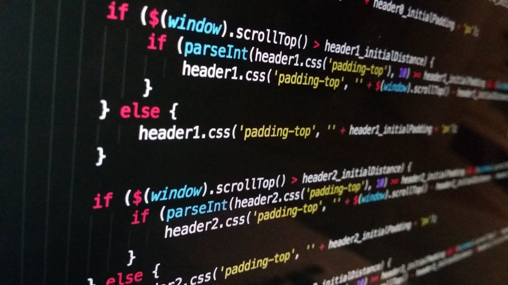
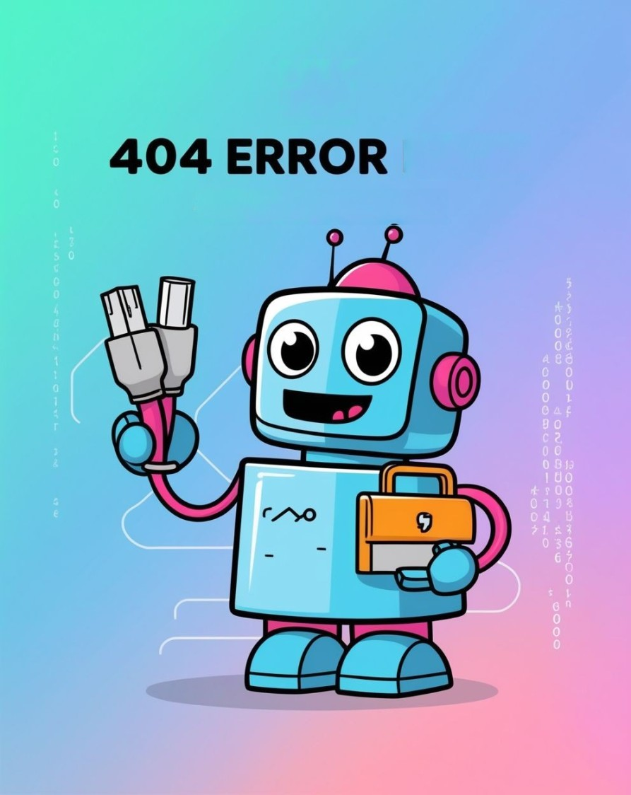
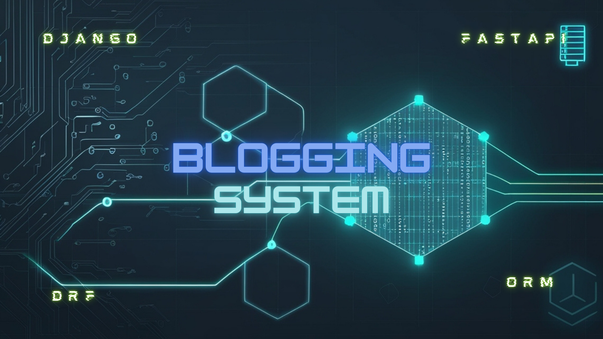
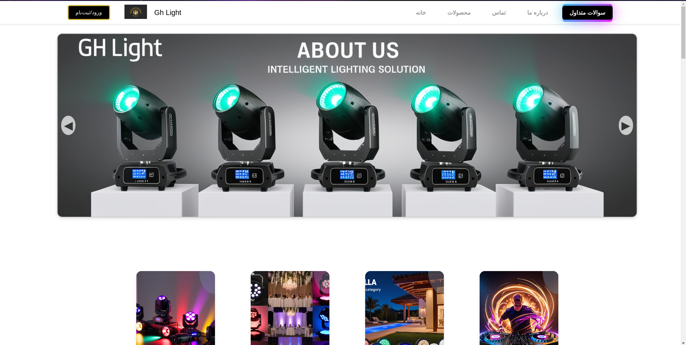

This is my source code of web platform that hosting classic games like Snake, Flappy Bird, Tic-Tac-Toe, and Chrome's Dinosaur Game. Powered by Django and PostgreSQL for seamless performance, with HTML, CSS, and JavaScript for a captivating frontend. Track your scores, compete on the leaderboard, and aim for the top spot. Join the gaming community, challenge yourself, and let the games begin!
Here is the source code for my web project, a ticket system built with Django, DRF, ORM, and frontend technologies like HTML, CSS, and JavaScript. The system allows clients to create ticket requests for the IT team, who can receive and respond to them efficiently.
in this section we can check my matrix project that i create matrix animations with language like c++,python,bash,cmd and html/css/js with different features
hash function is a mathematical algorithm that takes an input and produces output as a fixed-size string of characters, which is typically a hexadecimal or binary representation. This output is known as the hash value or hash code. now a days we have differend hashing method like md5 ssha sha-1 sha-256 bcrypt and if we want to rank them based on security: 🥇bcrypt 🥈sha-256 🥉ssha
Inside this repo i place two c++ code and python code to optimize linux and windows os,with help of this files you can optimize your system and make it faster just remind that for using this file you need admin access for windows you need run it as administrator and for linux you need password cuz command run on sudo and for compile codes you can use this commands 'gpp -o optimize optimize.cpp' or 'g++ -o optimize optimize.cpp' and then you can run it, i also create python code which do same thing for linux but with a bit extra feature
here we have my weather project which created with help of django and include pages like home and weather,home page: inside this page you can check out weather news about cities around word,storm ,torando,flood ,weather in your place and etc also there are links so if something was interesting for you,you could read more about it. weather page: this page created for searching and check out weather in differend locations ,in this page by searching city name you will recive data about location like weather,temperature,wind speed,time and etc
This repo include bash files to setup and manage service like v2ray and openvpn in this repo we place two setup method and some scripts which you can use them for service management
This repository is dedicated to hosting programs written in languages such as C, C++, Bash, JavaScript, and Python, writed for library management systems. The projects within explore difference data modeling techniques, providing discussions on various methods employed for efficient data storage and retrieval.
The To-Do List Application is a task management tool built with Django. It features a robust backend with REST API and ORM, and a user-friendly frontend using HTML, CSS, and JavaScript. Manage tasks, authenticate users, reset passwords, and access FAQs with ease.
A Django and FastAPI-based platform for creating and managing articles with secure user authentication, a powerful API, and advanced filtering options.
I developed this website from the ground up, handling every aspect including backend, frontend, database management, and SEO. Utilizing Django for the backend and Django Rest Framework (DRF) for the API, I ensured robust functionality and performance. For testing, I implemented pytest and the pytest-django plugin. The database is managed with Django's ORM and SQLite. On the frontend, I employed HTML, JavaScript, CSS, and Bootstrap to create a modern and responsive interface.
This website serves as an online store named "GhLight" showcasing and selling intelligent lighting products like moving head lights and other advanced lighting solutions. It includes various pages such as Home, Product Listings, Product Overview, Account Management, Checkout, About Us, FAQ, Contact Us, and Ticket Management. Users can explore products, view categories, watch introduction videos, and access services for inquiries, privacy policies, and terms of service.
